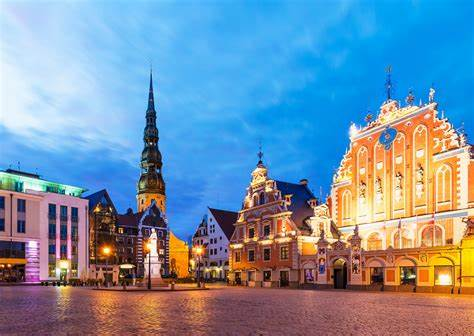

Rīga ir moderna pilsēta ar bagātu vēsturisko mantojumu, kura vilina ar daudzveidīgām kultūras un gastronomiskām izklaidēm, pārsteidzošu arhitektūru un saviļņojošas dabas tuvumu. Nebaidamies teikt, ka Rīga ir kosmopolītiskākā no Baltijas valstu galvaspilsētām. Rīgas rajonos notiek katru dienu
- KLASISKĀS MŪZIKAS KONCERTI
- BĒRNU PASĀKUMI
- VIRTUĀLIE PASĀKUMI
- utt.
Šodien mūsu grupa runās par pasākumiem Rīgā.
Ekonomika
Rīga ir ekonomiski attīstītākais reģions un lielākais industriālais centrs Latvijā. Pilsētā darbojas 60% Latvijas uzņēmumu un pilsētā strādā vairāk nekā 50% darbspējīgo iedzīvotāju. Pirmkārt, var izcelt pārtikas rūpniecību, kā arī kokapstrādes, tekstila, ķīmijas un farmācijas nozari. Pieaug Rīgas piesaistīto ārvalstu investīciju apjoms, kas padara to par nozīmīgu specializēto izstāžu norises vietu Baltijā
Sports
Speciāli 2006. gada pasaules čempionātam hokejā tika uzbūvēta Arēna Rīga, daudzfunkcionāls objekts ar maksimālo ietilpību 14 500 skatītāju, kurā notiek hokeja, basketbola un koncertu pasākumi. Tā kalpo arī kā hokeja kluba Dinamo (Rīga) mājas arēna, kas piedalījās KHL čempionātā. Veiksmīgākais futbola klubs valstī ir Skonto Rīga ar 14 līgas tituliem, kas tika atklāts 2000. gadā kopā ar Skonto futbola stadionu (latviski: Skonto stadions) ar 10 000 skatītāju vietām.